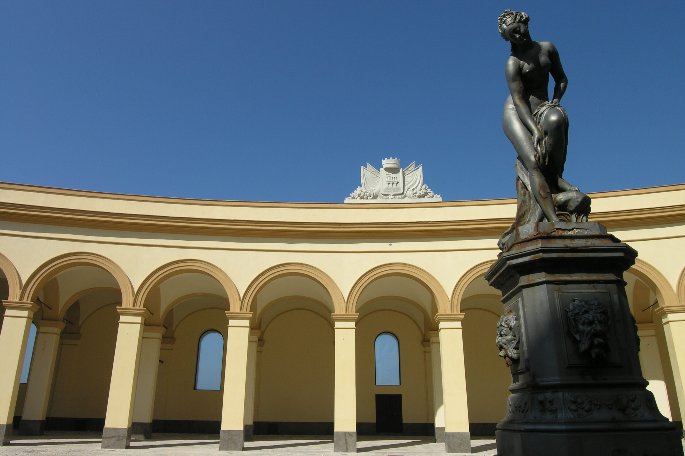
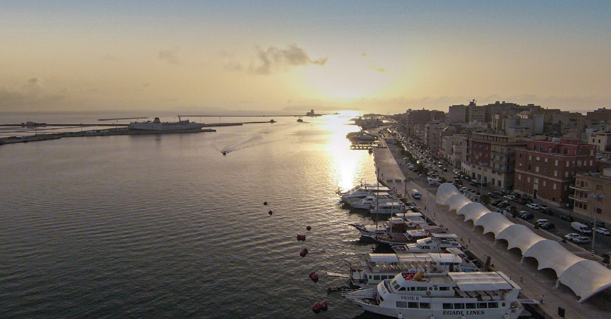

Piazza Municipio,
Trapani

Piazza Municipio
La Piazza Municipio, conosciuta storicamente anche come area dell’ex Mercato del Pesce, è uno degli spazi più significativi del centro storico di Trapani. Situata in posizione strategica tra il porto e il tessuto urbano antico, la piazza racconta in modo diretto l’anima marittima della città, profondamente legata al mare, alla pesca e ai commerci.
Per secoli questo spazio ha rappresentato il cuore economico di Trapani. Qui sorgeva infatti l’antico mercato del pesce, uno dei più attivi della Sicilia occidentale, dove il pescato arrivava direttamente dalle imbarcazioni del porto e veniva venduto all’alba in un’atmosfera vivace e rumorosa. Le voci dei pescatori, i colori del pesce fresco e il continuo movimento di merci e persone rendevano la piazza un punto nevralgico della vita cittadina.
Con il tempo, l’area ha subito una trasformazione urbana, evolvendosi da spazio esclusivamente commerciale a piazza istituzionale e di rappresentanza. Oggi è dominata dalla presenza del Palazzo Senatorio (o Palazzo Comunale), che conferisce alla piazza un ruolo amministrativo centrale. Nonostante i cambiamenti, il legame con il mare e con la tradizione peschereccia rimane fortissimo e ancora percepibile nell’atmosfera del luogo.
La piazza si trova a pochi passi dal porto, il che la rende un punto di transizione naturale tra la città e il mare. È uno spazio aperto, spesso attraversato da turisti e residenti, che la utilizzano come punto di passaggio ma anche come luogo di sosta per osservare la vita urbana trapanese. La luce del tramonto, riflettendosi sulle facciate chiare degli edifici, contribuisce a creare un’atmosfera particolarmente suggestiva.
Una curiosità interessante è proprio la sua identità “ibrida”: da mercato storico del pesce a piazza istituzionale, rappresenta perfettamente l’evoluzione di Trapani da città commerciale marittima a centro urbano moderno, senza mai perdere il suo legame con il mare.


Mura di Tramontana
Uno dei tratti più suggestivi del centro storico di Trapani, queste antiche mura costiere offrono una passeggiata panoramica unica sul mare. Da qui si gode una vista spettacolare sulle Egadi e sui tramonti che hanno reso celebre la città.

Torre di Ligny
Iconica torre costiera del XVII secolo situata sulla punta estrema della città. È uno dei punti panoramici più famosi di Trapani, dove Mar Tirreno e Mar Mediterraneo si incontrano in uno scenario mozzafiato.

Porto di Trapani
Cuore pulsante della città, da cui partono i collegamenti per le isole Egadi. È un’area vivace e fotografatissima, soprattutto al tramonto, quando le barche da pesca e i traghetti creano un’atmosfera molto suggestiva.